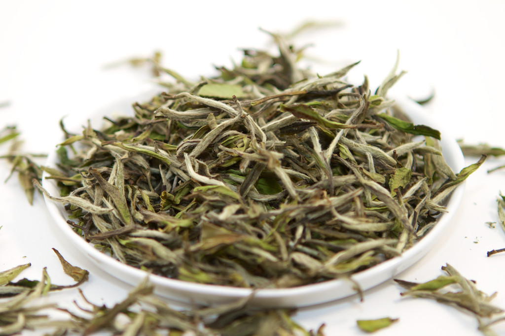

White Tea
Of all the teas, White tea Is the Least processed and the least oxidized giving it a very light flavour, very similar to the natural state of the plant. White tea is made from The buds of the tea plant and is picked very carefully to avoid bruising and releasing any enzymes. after picking the buds are simply laid out in the sun and left to dry. The reason why it is called white tea is because the tea buds still have small, white, fuzzy, hairs covering them. White Teas are generally brewed around 185 degrees fahrenheit to avoid destroying the delicate flavour, though this is personal preference.
